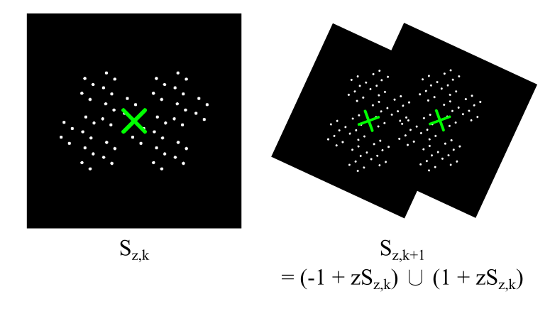
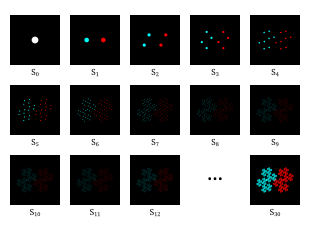
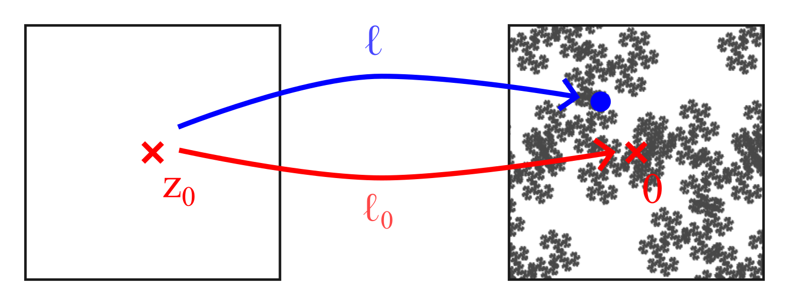
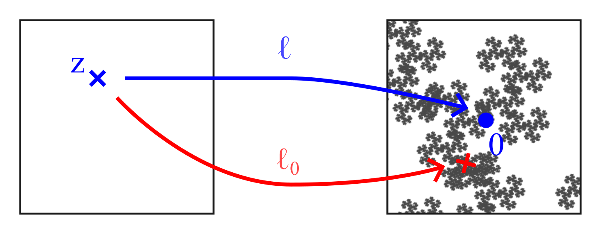
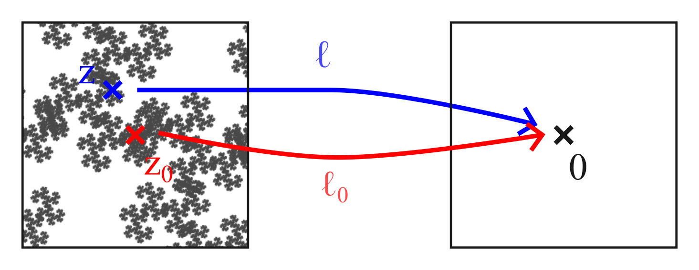
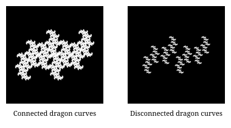
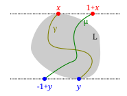

28 June 2026, Moses Mok
The story began with me searching around online for a maths-themed wallpaper (because I'm a massive nerd). Fractals had never interested me that much: the Mandelbrot set is so well-known that I thought it would seem lame to set it as wallpaper! I eventually came across blog posts by John Baez, Dan Christensen and Sam Derbyshire [1] [2] [3] [4], where I found a fascinating picture of roots of polynomials.
To me, polynomials are boring mathematical objects that I first encountered back in high school algebra classes and have since learned to deal with. It was quite surprising that a picture of polynomial roots can contain intricate patterns, so I set it as my wallpaper.
Fast forward to two weeks ago, I finished my exams, got bored, and (again, because I'm a massive nerd) decided to sign up to give a student talk at the Archimedeans, the university-wide maths society at Cambridge. It was only after I started diving deeper into the maths behind the wallpaper that I realised how much interesting theory is involved. Hopefully by the end of this, you'll be convinced that polynomials are actually beautiful!
The first half of this expository writing should be accessible to most STEM students with knowledge of sets, complex numbers and calculus. The second half is more targeted at readers with second or third-year undergraduate mathematics knowledge.
We would like to visualise $\mathcal D$. It is, of course, impossible to compute the roots of all infinitely many Littlewood polynomials, so we'll only plot the roots of all Littlewood polynomials of degree 36 (of which there are $2^{37}$ many) on the complex plane.
Here we go!
You can visit an interactive version of a plot for degree 24 here, made by Dan Christensen.
This looks quite pretty! The black spots on the sides are $-1$ and $+1$, and the "ring" is the unit circle. Let's zoom into the region near $-0.8i$.
We see a variety of intricate fractals, ranging from snowflakes on the sides to a gauze-like pattern in the middle. It is so beautiful, in fact, that I set it as my phone wallpaper!
We'll first discuss some basic properties of $\mathcal D$.
Proof.
That is good and all, but I think when you saw the visualisation of $\mathcal D$, you were not wondering why these properties hold. Instead, your questions are probably:
If you know something about fractals and have a keen eye, you might notice the patterns we saw are called dragon curves. To understand what they are, we need a crash course in iterated function systems, a method of producing fractals.
Dragon curves are parametrised by a complex number $z$. We consider the iterated function system $$ \begin{align*} \mathcal{F}_z := \Big\{f_{z+}(w) = 1 + zw, \qquad f_{z-}(w) = -1 + zw\Big\}. \end{align*} $$ These are complex scaling by $z$ and then translation by $\pm 1$. For them to be contraction mappings, distances need to shrink, so we require $|z|<1$.
Here comes a general theorem about iterated function systems. Don't worry if the statement or the proof doesn't make sense — we'll see an example very soon!
There exists a unique non-empty compact (i.e. closed and bounded) set $A$ (called the attractor) satisfying the self-similarity property $$ \begin{align*} A = \bigcup_{n=1}^{N} f_n(A) \equiv \sb{f_n(x)}{n=1,\ldots,N, \; x\in A}. \end{align*} $$
Moreover, $A$ is the attractor in the following sense: starting with an arbitrary non-empty compact set $S_0 \subset \C$ and performing the iterative process $$ \begin{align*} S_{k+1} := \bigcup_{n=1}^{N} f_n(S_k), \qquad \text{for all } k\geq 0, \end{align*} $$ we have $$ \begin{align*} S_k \to A \qquad \text{as $k\to \infty$} \end{align*} $$ in the so-called Hausdorff metric. [5]
We can produce the dragon curve with this theorem. Take an initial "seed" point $w=0$, and keep applying one of $f_{z+}$ or $f_{z-}$. Formally, define by recursion \begin{align*} S_{z,0} :={}& \{0\}, \\ S_{z, k+1} :={}& f_{z+}(S_{z,k}) \cup f_{z-}(S_{z,k}) \\ ={}& (1 + z S_{z,k}) \cup (-1 + zS_{z,k}). \end{align*} (When I write arithmetic operation on sets, I mean doing it pointwise and forming a new set, e.g. $1 + zS_{z,k} \equiv \sb{1 + zw}{w\in S_{z,k}}$.)


In the limit, $S_{z, k} \to A(z)$ the attractor, which we will call the dragon curve associated with $z$. It is the unique non-empty compact set satisfying the self-similarity property $$ \begin{align*} A(z) = (1 + zA(z)) \cup (-1 + zA(z)). \end{align*} $$
We've taken a glimpse at how dragon curves relate to roots of Littlewood polynomials. We now present a handwavy argument, due to Greg Egan, to explain why $\mathcal D$ contains dragon curves.
Recall that the iterate $S_{z, k+1}$ is the image of $z$ under all degree-$k$ Littlewood polynomials, and that $S_{z,k}$ converges to the attractor $A(z)$. Taking the limit as $k\to\infty$, roughly \begin{align*} A(z) &\approx \{\ell(z) \mid \text{Littlewood polynomial $\ell$}\} \\ \end{align*} so \begin{align*} \mathcal D &\approx \{z \in \C \mid 0 \in A(z)\}. \end{align*} (We will make this more precise later.)

Suppose $z_0\in \mathcal D$, so a zero of some Littlewood polynomial $\ell_0$. For the sake of argument, let's assume $\ell_0'(z_0) \neq 0$, meaning $z_0$ is a simple zero of $\ell_0$. If $\ell$ is a Littlewood polynomial that is "close" to $\ell_0$, we expect $\ell$ to have a root "close" to $z_0$. Taylor expanding about $z_0$ gives $$ \begin{align*} \ell(z) \approx \ell(z_0) + (z - z_0) \,\ell'(z_0). \end{align*} $$ Where is the root of $\ell$? Rearranging, $\ell(z) = 0$ whenever $$ \begin{align*} z \approx z_0 - \frac{1}{\ell'(z_0)}\cdot \ell(z_0) \approx z_0 - \frac{1}{\ell_0'(z_0)}\cdot \ell(z_0), \end{align*} $$ using the fact $\ell$ is "close" to $\ell_0$. Notice the root of $\ell$ is determined by an affine transformation of $\ell(z_0)$.

Therefore about $z_0$, $$ \begin{align*} \mathcal{D} &\supseteq \set{\text{zeros of Littlewood polynomial ``close'' to $\ell_0$}} \\ &\approx \sb{z_0 - \frac{1}{\ell_0'(z_0)} \cdot \ell(z_0)}{\text{Littlewood polynomial $\ell$ ``close'' to $\ell_0$}} \\ &\approx z_0 - \frac{1}{\ell_0'(z_0)} A(z_0), \end{align*} $$ so $\mathcal D$ contains a scaled and translated copy of $A(z_0)$, which is a fractal!

Let's see the relationship between Littlewood polynomials and dragon curves in action. In the demo below (or click here), choose a point $z$ on the top panel. The lower left panel is the set $\mathcal D$, zoomed in near $z$. In the lower right panel, the dragon curve $A(z)$ associated with $z$ is plotted.
Try moving around $z$, and you'll notice the pattern of $\mathcal D$ near $z$ is similar to the dragon curve $A(z)$!
This is pretty cool, but the argument I gave was quite wishy-washy. To redeem myself, we'll answer our second question with some rigorous analysis, and you'll be able to see how this correspondence between roots of Littlewood polynomials and dragon curves can help with proofs.
Here, $\overline{\mathcal D}$ denotes the closure of $\mathcal D$, meaning the set of all limits of convergent sequences in $\mathcal D$. Intuitively, $\overline{\mathcal D}$ fills in all the "gaps" in $\mathcal D$. (Theorem 5 is clearly false if you replace $\overline{\mathcal D}$ with $\mathcal D$ — the annulus is an uncountable set while $\mathcal D$ consists only of algebraic numbers so must be countable!)
This theorem tells us not only does $\overline{\mathcal D}$ contain the unit circle (as we've shown back in Proposition 2), but it contains an annulus surrounding the unit circle. Thus when we plot $\mathcal D$, dense points can be seen in a neighbourhood of the unit circle, which explains the "halo".
Here is the game plan to prove Theorem 5! We'll follow Bousch's proof.
Theorem 5 can then be derived from these results as follows.
Instead of Littlewood polynomials, we need to consider Littlewood series.
Notice every Littlewood series has a radius of convergence of $1$, so defines an analytic function $B_1(0) \to \C$.
We now discuss the topology of Littlewood polynomials and series, meaning when two such functions are "close together".
Remark. We can rephrase the lemma in more sophisticated terms: for each $0 < r < 1$, there is a uniformly continuous function, from the space $\{+1, -1\}^{\Z_{\geq 0}}$ of sequences of $\{+1, -1\}$ (with the product topology), to the space $C(B_r[0])$ of continuous functions $B_r[0] \to \C$ (with the sup norm), defined by $$ \begin{align*} \set{+1, -1}^{\Z_{\geq 0}} &\to C(B_r[0]) \\ (a_n)_{n\geq 0} &\mapsto \left(z \mapsto \sum_{n=0}^{\infty} a_n z^n\right). \end{align*} $$ It might be worth noting that $\set{+1, -1}^{\Z_{\geq 0}}$ is homeomorphic to the Cantor set, which is compact and metrizable.
This reveals that two Littlewood polynomials or series that agree on the first few terms are "close together".
The above lemma allows us to show that "close" Littlewood polynomials and series have roots that are "close together".
Proof. By the principle of isolated zeros, $f$ has finitely many roots in any compact set in $B_1(0)$. Therefore by shrinking $\delta$, without loss of generality assume $B_\delta[z_0] \subseteq B_1(0)$ and $f$ does not have any roots on $\partial B_\delta[z_0] \equiv \sb{w\in \C}{|w - z_0| = \epsilon}$.
By the compactness of $\partial B_\delta[z_0]$, take $\epsilon := \inf \sb{|f(z)|}{z \in \partial B_{\delta}[z_0]} > 0$. Moreover pick some $|z_0| + \delta < r < 1$.
Apply Lemma 7 with the above $r$ and $\epsilon$ to obtain $N\in \N$. Then for any $g(z) = \sum_{n=0}^\infty b_n z^n$ with $|b_n| \leq 1$ and $a_n = b_n$ for all $n < N$, we have $$ |f(z) - g(z)| < \epsilon \leq |f(z)| \qquad \text{for all } z\in \partial B_\delta[z_0]. $$
Now we apply Rouché's theorem! Because $f$ and $g$ are analytic functions on $B_\delta[z_0]$, it tells us that the number of roots of $g$ in $B_\delta(z_0)$ equals that of $f$, which is at least one.
$\supseteq$. Let $f(z) = \sum_{n=0}^\infty a_n z^n$ be a Littlewood series and $f(z_0) = w$. Recall that the dragon curve $A(z_0)$ is the limit of the sequence \begin{align*} S_{z_0,k+1} = \sb{\ell(z_0)}{\text{degree-$k$ Littlewood polynomial $\ell$}}. \end{align*} It suffices (by the definition of the Hausdorff metric) to find a sequence $(w_k)_{k\geq 0}$ such that $w_k\in S_{z_0,k}$ and $w_k\to w$. Taking the truncated series $$ w_k := \sum_{n=0}^{k-1} a_n z_0^n $$ works.
$\subseteq$. Suppose $w\in A(z_0)$. We construct a Littlewood series $f(z) = \sum_{n=0}^\infty a_n z^n$ recursively as follows: start by taking $w_0 := w$. Given $w_n \in A(z_0)$, recall $A(z_0)$ satisfies the self-similarity property $$ A(z_0) = (1 + z_0 A(z_0)) \cup (-1 + z_0 A(z_0)), $$ so take $a_n\in \{+1, -1\}$ and $w_{n+1}\in A(z_0)$ such that $w_n = a_n + z_0 w_{n+1}$. Repeat to obtain $(a_n)_{n\geq 0}$ such that $$ w - z_0^N w_N = \sum_{n=0}^{N-1} a_n z_0^n. $$
Since $A(z_0)$ is bounded and $|z_0| < 1$, we have $z_0^N w_N \to 0$ as $N\to\infty$. Therefore $f(z_0) = \sum_{n=0}^\infty a_n z_0^n = w$.
This is the key result that allows us to translate problems about $\mathcal D$ into problems about $A(z)$.
Proof. By Proposition 9, it suffices to show that for $|z_0| < 1$, $z_0 \in \overline{\mathcal D}$ if and only if $z_0$ is a root of some Littlewood series.
$\Leftarrow$. If $z_0$ is a root of a Littlewood series $f(z) = \sum_{n=0}^\infty a_n z_0^n$, consider the truncated series $$ \ell_k(z) := \sum_{n=0}^{k-1} a_n z^n. $$
For each $\delta>0$, by Lemma 8, there is some $N\in \N$ such that the Littlewood polynomial $\ell_N$ has a root $z_N$ with $|z_N - z_0| < \delta$. These $z_N \in \mathcal D$ form a sequence that converges to $z_0$, so $z_0 \in \overline{\mathcal D}$.
$\Rightarrow$. If $z_0\in \mathcal D$, say a root of a Littlewood polynomial $\ell(z) = \sum_{n=0}^{N-1} a_n z^n$, then $z_0$ is also a root of the Littlewood series \begin{align*} f(z) :={}& (1 + z^{N} + z^{2N} + \ldots)\cdot \ell(z) \\ ={}& (a_0 + \ldots + a_{N-1}z^{N-1}) + (a_0 z^N + \ldots + z_{N-1} z^{2N-1}) + \ldots. \end{align*}
Otherwise, $z_0$ is a limit point of $\mathcal D$, meaning there is a sequence of distinct points $(z_k)_{k\geq 0}$ in $\mathcal D$ such that $z_k \to z_0$. Suppose each $z_k$ is a root of a Littlewood polynomial $\ell_k(z) = \sum_{n=0}^{\infty} a_{k, n} z^n$ (where $a_{k,n}\in \{-1, 0, +1\})$. We want to find a Littlewood series $f(z) = \sum_{n=0}^{\infty} a_{\infty, n}z^n$ such that $f(z_0) = 0$. Perform a diagonal extraction:
Repeat to obtain $(a_{\infty, n})_{n\geq 0}$, and define $ϕ(k) := ϕ_k(k)$ and $f(z) := \sum_{n=0}^{\infty} a_{\infty, n} z^n$.
For each $k\geq 0$, note that $f$ and $\ell_{ϕ(k)}$ agree in the first $(k+1)$ terms, so by Lemma 7, $\ell_{ϕ(k)}\to f$ uniformly in $B_{r}[0]$, choosing $r := \sup_k |z_k| < 1$. Thus $$ \begin{align*} |f(z_0)| ={}& |f(z_0) - \ell_{ϕ(k)}(z_{ϕ(k)})| \\ \leq{}& \underbrace{|f(z_0) - f(z_{\phi(k)})|}_{\to 0 \text{ by continuity}} + \underbrace{|f(z_{ϕ(k)}) - \ell_{ϕ(k)}(z_{ϕ(k)})|}_{\to 0 \text{ by uniform convergence}} \\ \to{}& 0, \end{align*} $$ and hence $f(z_0) = 0$.
Remark. In the proof of $\Rightarrow$, we basically showed the sequence space $\{+1, -1\}^{\Z_{\geq 0}}$ is compact, which is a consequence of Tychonoff's theorem!

We've done enough analysis to turn our problem about Littlewood polynomials into a problem about dragon curves. Let's now take a change in direction and do some point-set topology by studying the geometry of dragon curves. We will use the defining feature of the dragon curve $A(z)$ multiple times, which is the self-similarity property $$ A(z) = (1 + zA(z)) \cup (-1 + zA(z)). $$
First, let's provide some useful characterisations of when $A(z)$ is connected.
$3 \Rightarrow 1$. We say a set $A\subseteq \C$ is $t$-chain connected (for $t > 0$) if for all $x,y\in S$, there exists a finite sequence (chain) $x = x_0, x_1, \ldots, x_{n-1}, x_n = y\in S$ such that $|x_i - x_{i-1}| < t$ for all $i$.
$A(z)$ is bounded, so it is $(\sup \sb{|x-y|}{x,y\in A(z)})$-chain connected. If $A(z)$ is $t$-chain connected, then $\pm 1 + zA(z)$ is $|z|t$-chain connected by scaling the chain. Since $(1 + zA(z)) \cap (-1 + zA(z)) \neq \emptyset$, by combining two chains together, $A(z) = (1 + zA(z)) \cup (-1 + zA(z))$ is also $|z|t$-chain connected. Since $|z|<1$, repeat to show $A(z)$ is $ε$-chain connected for all $ε>0$.
If $A(z)$ is a union of two disjoint closed sets $B, C$, since $A(z)$ is compact, so are $B$ and $C$, so $\epsilon := \inf\sb{|b - c|}{b\in B, c\in C} > 0$. Then $A(z)$ cannot be $\epsilon$-chain connected, which is a contradiction. Hence $A(z)$ must be connected.
Remark. I've included the path-connected characterisation to simplify proofs, but in fact we can avoid using it in the upcoming proofs. See if you can spot how!
Remark. In fact, there is a dichotomy of the connectedness of the attractor of any iterated function system with two maps: either the attractor is connected, or it is totally disconnected. [8]
Next, we'll provide a sufficient condition for the connectedness of $A(z)$.
Proof. By Lemma 11, it suffices to show $(1 + zA(z)) \cap (-1 + zA(z)) \neq \emptyset$. For a set $A \subseteq \C$ and $ε>0$, write $A^ε$ for its $ε$-extension $$ \begin{align*} A^ε := A + B_ε(0) \equiv \sb{z\in \C}{\exists a\in A: |z - a| < ε}. \end{align*} $$
Because $f_{z\pm} : w \mapsto \pm 1 + zw$ are contraction mappings, $\pm 1 + z A(z) \subseteq A(z)$ implies $$ \pm 1 + z(A(z)^ε) \subseteq A(z)^ε, $$ so $$ \begin{align*} (1 + zA(z)^ε) \cup (-1 + zA(z)^ε) \subseteq A(z)^ε. \end{align*} $$
One way of showing a set is non-empty is to show it has strictly positive area! Let $μ$ be the Lebesgue measure, which measures the area of a set. Since $A(z)$ is non-empty, $A(z)^\epsilon$ contains a ball of radius $\epsilon$, so $$ \begin{align*} μ(A(z)) \geq πε^2 > 0. \end{align*} $$ Moreover area is invariant under translation, and scaling a set by a factor of $\lambda$ multiplies its area by $\lambda^2$. Therefore $$ \begin{align*} μ(\pm 1 + zA(z)^ε) = μ(z A(z)^ε) = |z|^2 μ(A(z)^ε). \end{align*} $$ Thus the inclusion-exclusion principle yields $$ \begin{align*} & μ\bigl((1+zA(z)^ε) \cap (-1+zA(z)^ε)\bigr) \\ ={}& μ\bigl(1 + zA(z)^ε\bigr) + μ\bigl(-1 + zA(z)^ε\bigr) - μ\bigl((1 + zA(z)^ε) \cup (-1 + zA(z)^ε)\bigr) \\ \geq{} & 2|z|^2 μ(A(z)^ε) - μ(A(z)^ε) \\ ={}& (2|z|^2 - 1) \, μ(A(z)^ε) > 0, \end{align*} $$ which follows from the condition $|z| > 2^{-1/2}$. Hence $$ \begin{align*} (1 + zA(z)^ε) \cap (-1 + zA(z)^ε) \neq \emptyset. \end{align*} $$
To conclude, for each $ε = 1/n$, pick $x_n \in (1 + zA(z)^ε) \cap (-1 + zA(z)^ε)$. By compactness, the limit of a convergent subsequence of $(x_n)$ lies in $(1 + zA(z)) \cap (-1 + zA(z))$.Finally, we'll relate the connectedness of dragon curves to $\mathcal D$. Before we prove Lemma 14, we need an auxiliary result about "holes" in dragon curves.
Proof. $\C \setminus B_{r'}[0]\subseteq \C\setminus A(z)$ where $r' := \max\sb{|w|}{w\in A(z)}$, so $\C\setminus B_{r'}[0]$ lies in a unique unbounded connected component $U_z$ of $\C \setminus A(z)$.
By Lemma 11, $A(z)$ is path-connected. Picking any $x\in A(z)$, since $-x\in A(z)$, find a path $γ$ in $A(z)$ from $x$ to $-x$. Then the concatenation $γ \cdot -γ$ is a closed curve based at $x$ with an odd (hence non-zero) winding number around $0$. Note the function sending $w\in \C \setminus A(z)$ to the winding number of $γ \cdot -γ$ around $w$ is constant on connected components of $\C \setminus A(z)$ and is zero on $U_z$. Therefore $0$ does not lie in $U_z$, so $0$ lies in a bounded component $V_z$ of $\C\setminus A(z)$.
Proof. By Proposition 9, the dragon curve is the image of $z$ under all Littlewood series $$ \begin{align*} A(z) = \sb{\sum_{n=0}^\infty a_n z^n}{a_n\in \{+1, -1\}}. \end{align*} $$ Observe
Suppose for a contradiction $A(z^2)$ is connected but $0\not\in A(z) = A(z^2) + zA(z^2)$. We now make a series of claims.
Claim 1. $A(z^2) \cap zA(z^2) = \emptyset$.
Proof of claim. If not, say $α\in A(z^2) \cap zA(z^2)$, then $-α\in A(z^2)$ by symmetry, so $0 = (-α) + α\in A(z^2) + zA(z^2)$, contradiction.
Claim 2. $A(z^2)\subseteq zU_{z^2}$, the unbounded component of $\C \setminus zA(z^2)$.
Proof of claim. Let $x\in A(z^2)$ be with maximal $|x|$. Then $\C \setminus B_{|x|}[0] \subseteq U_{z^2}$. Since $|z| < 1$, $|x| > |z||x|$ so $x \in \C \setminus B_{|z||x|}[0] \subseteq zU_{z^2}$. As $A(z^2)$ is connected, $A(z^2) \subseteq zU_{z^2}$.
Claim 3. $z^2A(z^2)\subseteq zV_{z^2}$, the belly of $zA(z^2)$.
Proof of claim. Let $x\in A(z^2)$ be with minimal $|x|$. Then $B_{|x|}(0) \subseteq V_{z^2}$. $z^2 x\in z^2 A(z^2)$ satisfies $|z^2 x| < |z| |x|$ so $z^2x\in B_{|z||x|}(0)\subseteq zV_{z^2}$. As $z^2 A(z^2)$ is connected, $z^2 A(z^2) \subseteq zV_{z^2}$.
Because $z^2 A(z^2)$ and $A(z^2)$ lie in different components of $\C \setminus zA(z^2)$, we obtain $$ \begin{align*} \emptyset = z^2 A(z^2) \cap A(z^2) = L \cap \bigl((1 + L) \cup (-1 + L)\bigr) \end{align*} $$ where $L := z^2 A(z^2)$, using the self-similarity property $A(z^2) = (1 + z^2 A(z^2)) \cup (-1 + z^2A(z^2))$. Meanwhile, because $A(z^2)$ is connected, Lemma 11 says $$ (1 + L) \cap (-1 + L) \neq \emptyset. $$ We will now show that these two statements lead to a contradiction.
Because $L$ is compact, find $x, y\in L$ such that $\Im x$ is maximal and $\Im y$ is minimal. Then $L\subseteq \sb{z\in \C}{\Im x \leq \Im z \leq \Im y}$. $L$ is path-connected by Lemma 11, so there is a path $\gamma$ in $L$ from $x$ to $y$.
Moreover $(1 + L) \cap (-1 + L) \neq \emptyset$, so $(1 + L) \cup (-1 + L)$ is path-connected. Note $1+x, -1 + y \in (1 + L) \cup (-1 + L)$, so there is a path $μ$ in $(1 + L) \cup (-1 + L)$ from $1+x$ to $-1+y$. $\gamma$ and $\mu$ must intersect (otherwise we can produce a planar embedding of $K_5$), showing $L \cap ((1 + L) \cup (-1 + L))\neq \emptyset$.

Here are a few questions and tangents related to $\mathcal D$.
Instead of $\{+1, -1\}$, what if we consider a different set of possible values of polynomial coefficients?
Polynomials with coefficients $\{0, 1\}$ were studied by Odlyzko and Poonen in 1993 [9], which provided useful techniques for future work to build on. For coefficients in $\{+1, 0, -1\}$, it can be shown using the characterisation in Lemma 11 that $$ \begin{align*} &\sb{z\in B_1(0)}{\text{$A(z)$ is connected}} \\ =&{} \sb{z\in B_1(0)}{\sum_{n=0}^\infty a_n z^n = 0 \text{ for some } a_n\in \{+1, 0, -1\}}, \end{align*} $$ which is denoted $\mathcal M$. [6] In 2014, Calegari, Koch, and Walker [10] showed that the interior of $\mathcal M$ is almost dense, in the sense $$ \mathcal M = \overline{\op{int}\mathcal M} \cup (\mathcal M \cap \R), $$ (which is known as Bandt's conjecture), and that $\mathcal M$ has infinitely many holes.
The premise of this article was quite simple: explain phenomena about roots of polynomials with restricted coefficients. Before I started looking into the literature, I certainly didn't expect to go on a fascinating journey through dynamical systems, analysis and topology! I hope you'll agree that not only is the picture of roots of Littlewood polynomials beautiful, but so is the connection between the polynomials and dragon curves.
For discussion or correction, feel free to create an issue on the GitHub repository or email me!
© 2026 Moses Mok